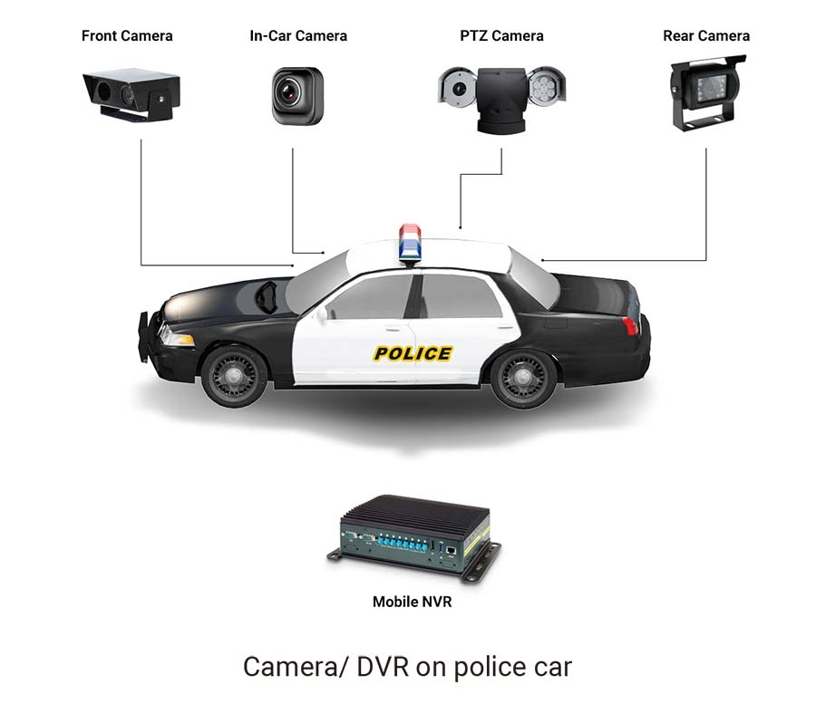
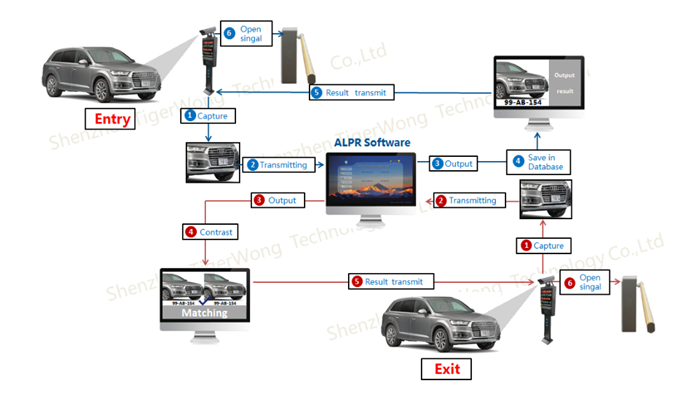
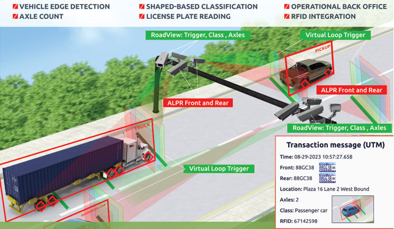
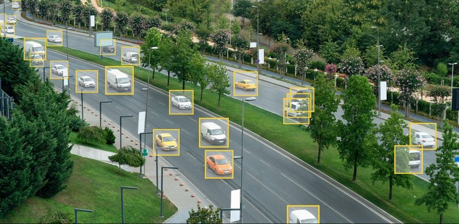

Applications of Automated License Plate Recognition (ALPR)
ALPR technology is widely adopted in various fields to improve efficiency and security. Below are some key applications where ALPR plays a crucial role:
1. Law Enforcement
One of the most important applications of ALPR is in law enforcement. ALPR systems can help police officers and other authorities track stolen vehicles, identify vehicles involved in crimes, and automatically issue tickets for traffic violations such as speeding or illegal parking.
2. Parking Management
ALPR systems are used in parking lots to automate vehicle entry and exit. By recognizing license plates, these systems can monitor which vehicles enter and leave a parking facility, provide automatic billing, and even reserve spots for registered users. It makes parking management more efficient and reduces the need for manual checks.
3. Toll Collection
Toll collection has become faster and more efficient with ALPR. Vehicles passing through toll booths are automatically identified by their license plates, and the toll amount is charged to the driver's account. This system reduces congestion and ensures smooth traffic flow at toll points.
4. Traffic Monitoring and Management
In addition to enforcement and toll collection, ALPR systems are used to monitor and manage traffic in real-time. ALPR systems installed on highways and at key intersections can track vehicle movements, identify traffic bottlenecks, and help cities manage traffic flow more efficiently.
